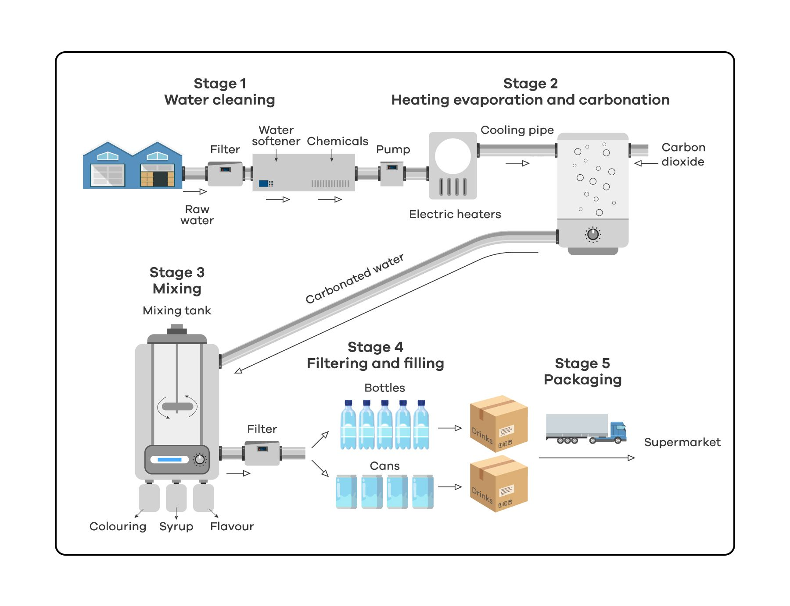

You should spend about 20 minutes on this task.
The diagram gives information about the process of making carbonated
drinks.
Summarise the information by selecting and report in the main features, and
make comparisons where relevant.
Write at least 150 words.
You should spend about 40 minutes on this task.
By punishing murderer with the death penalty, society it also guilty of
committing murder. Therefore, life in prison it a better punishment for
murderers.
To what extent do you agree or disagree with this statement?
You should write at least 250 words